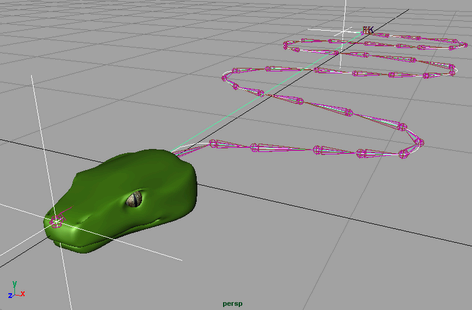

使用样条线 IK 的蛇角色爬过森林地面。通过平移和旋转 NURBS 曲线来操纵这条蛇。NURBS 曲线由曲线起点（头部）和终点（尾部）的控制对象（在本示例中为定位器）驱动。
- 选择蛇角色的样条线 IK 控制柄。

样条线 IK 控制柄从第一个关节开始，到蛇骨架的最后一个关节结束，其 NURBS 曲线穿过所有关节和骨骼。
- 在“属性编辑器”(Attribute Editor)中，选择 ikHandle 节点。
- 在“IK 解算器属性”(IK Solver Attributes)中，单击按钮“添加高级扭曲控制”(Add Advanced Twist Control)。
- 将“世界上方向类型”(World Up Type)设置为“对象旋转上方向(开始/结束)”(Object Rotation Up (Start/End))。
- 分别从“上方向轴”(Up Axis)和“正向轴”(Forward Axis)下拉列表中选择“正 X”(Positive X)和“正 Y”(Positive Y)。
这会将蛇关节的开始和末关节上方向向量约束到用于驱动 NURBS 曲线的定位器的 X 轴和 Y 轴。
注： “正向轴”(Forward Axis)和“上方向轴”(Up Axis)属性指定哪个局部关节轴与在“上方向向量”(Up Vector)字段中指定的上方向对象向量对齐。
- 在“世界上方向对象”(World Up Object)字段和“世界上方向对象 2”(World Up Object 2)字段中键入头部定位器的名称。
定位器的正 Y 轴方向用于计算蛇骨架关节的上方向向量。
注： 可以使用“上方向向量”(Up Vector)和“上方向向量 2”(Up Vector 2)字段指定关节的特定向量偏移。
- 选择并移动头部定位器。
这将移动蛇骨架中的所有关节和骨骼。请注意，现在的关节和骨骼也符合操纵对象的方向。